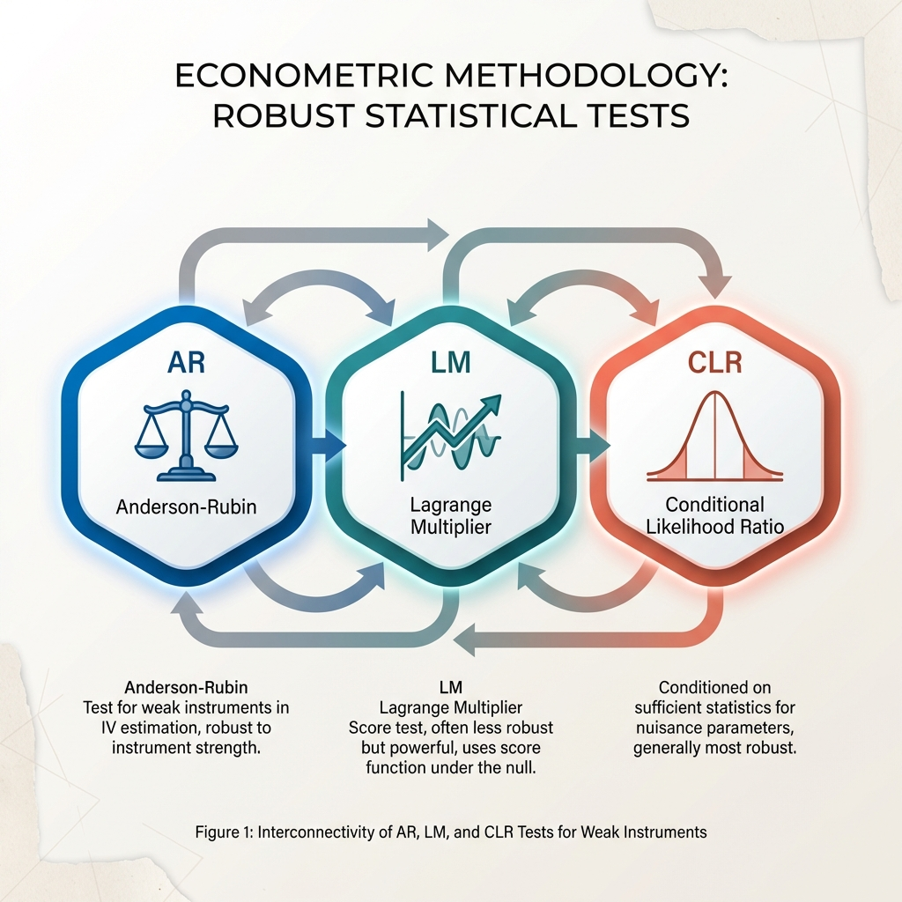

🔬 Research-Grade Econometrics
Weak-IV Robust Inference for Modern Econometrics¶
A Python library implementing Anderson-Rubin, LM/K, and CLR tests with robust covariance options, set-valued confidence sets, and comprehensive diagnostics. Built by researchers, for researchers.
The Weak Instrument Problem¶

Why this matters: Standard IV inference (2SLS t-tests) can be severely distorted when instruments are weak. The Anderson-Rubin, LM, and CLR tests implemented in ivrobust maintain correct size even under weak identification, following the guidance of 1 and modern weak-IV econometrics.
Core Methods¶

Anderson-Rubin (AR)¶
The foundational weak-IV robust test. Inverts the joint test on instruments for confidence sets that are valid regardless of instrument strength.
📚 Anderson & Rubin (1949)
Lagrange Multiplier (LM/K)¶
Kleibergen's score-based test with optimal local power. Uses the score function under the null hypothesis for efficient weak-IV robust inference.
📚 Kleibergen (2002)
Conditional Likelihood Ratio (CLR)¶
Moreira's conditional test combining AR and LM statistics. Achieves near-optimal power while maintaining weak-IV robustness through conditioning.
📚 Moreira (2003)
Quick Example¶
import ivrobust as ivr
# Generate synthetic weak-IV data
data, beta_true = ivr.weak_iv_dgp(n=300, k=5, strength=0.4, beta=1.0, seed=0)
# Run weak-IV robust inference
res = ivr.weakiv_inference(
data,
beta0=beta_true,
alpha=0.05,
methods=("AR", "LM", "CLR"),
cov_type="HC1",
)
# Access test results
print(f"AR p-value: {res.tests['AR'].pvalue:.4f}")
print(f"CLR confidence set: {res.confidence_sets['CLR'].intervals}")
Practitioner Workflow¶
Gallery Highlights¶


Research Team¶
ivrobust is developed and maintained by researchers committed to rigorous, reproducible econometric software.
Citing ivrobust¶
📄 BibTeX
When using ivrobust, please also cite the methodological references for the specific tests you employ (see References).
Trust & Reproducibility¶
Continuous Integration¶
All commits are tested against a comprehensive suite including linting, type checks, unit tests, notebook execution, and documentation builds.
Reproducible Figures¶
Every figure in the documentation is generated from committed code with fixed random seeds, ensuring full reproducibility.
Clear Scope¶
Focused implementation of weak-IV robust inference for a single endogenous regressor with comprehensive documentation and examples.
-
Isaiah Andrews, James H. Stock, and Liyang Sun. Weak instruments in instrumental variables regression: theory and practice. Annual Review of Economics, 2019. doi:10.1146/annurev-economics-080218-025643. ↩